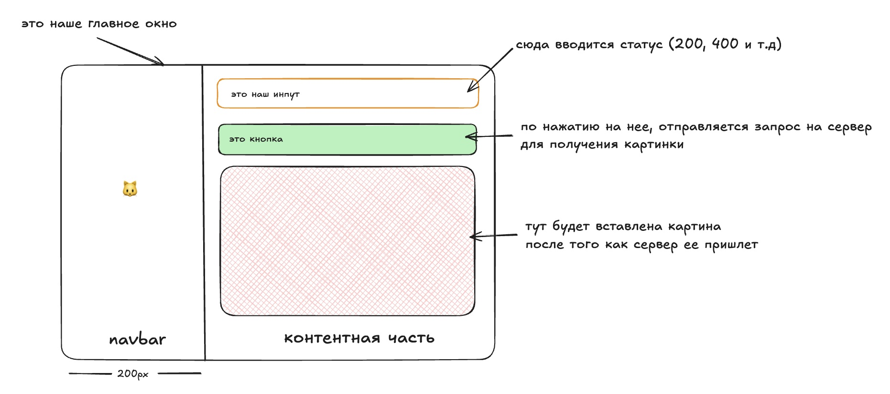
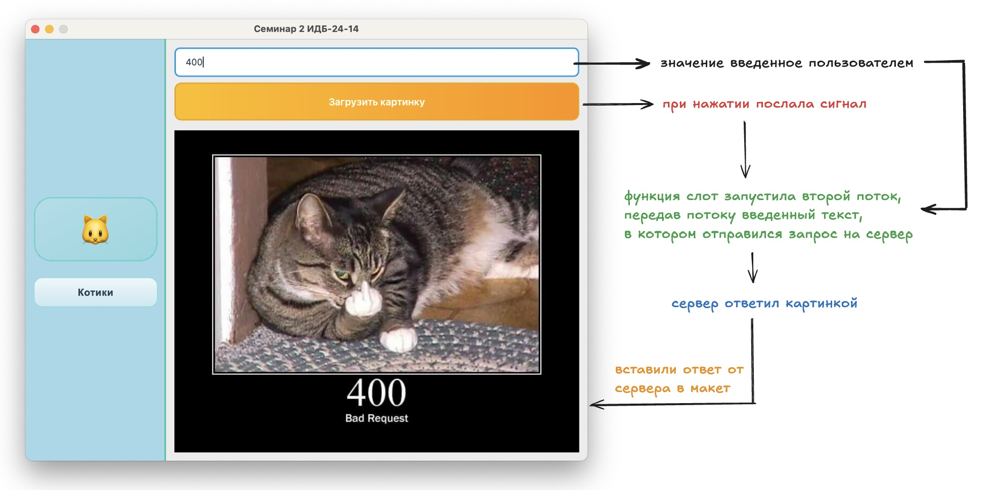

Методичка по созданию GUI приложения на PyQt6
Введение
В этой методичке мы пошагово создадим GUI приложение с использованием библиотеки PyQt6. Наше приложение будет состоять из навигационной панели и контентной области, где пользователь сможет загружать изображения котиков по HTTP коду состояния.
Содержание
- Подготовка проекта
- Создание базового окна
- Разработка навигационной панели
- Создание контентной страницы
- Работа с потоками и HTTP запросами
- Отображение изображений
Подготовка проекта
Шаг 1: Создание структуры проекта
- Создайте новую папку для проекта
- Откройте папку в редакторе/IDE (VS Code, PyCharm и т.д.)
- Создайте виртуальное окружение:
- Активируйте виртуальное окружение:
Шаг 2: Установка зависимостей
-
Установите необходимые библиотеки:
-
Зафиксируйте зависимости:
-
Для будущих запусков используйте:
Шаг 3: Создание файлов проекта
Создайте следующие файлы:
main.py— точка входа в приложениеnavbar.py— навигационная панельpage.py— контентная страницаstyles.py— стили для интерфейсаapi.py— константы для APIrun.py- файл для автоматического хот релоада (по желанию)
Макет проекта и его составляющие

Основной принцип работы

Создание базового окна
Основные компоненты PyQt6
Перед началом разработки важно понимать базовые компоненты:
QApplication
- "Сердце приложения" — без него окно не появится
- Отвечает за:
- Обработку событий (клики мыши, нажатия клавиш)
- Управление циклом программы
- Глобальные настройки (тема, шрифты, стили)
QWidget
- Базовый элемент интерфейса — окна, кнопки, поля ввода
- Может быть пустым окном или содержать другие виджеты
- Основа для создания пользовательских компонентов
Создание главного окна
Создайте файл main.py:
import sys
from PyQt6.QtWidgets import QApplication, QWidget, QHBoxLayout
from PyQt6.QtCore import Qt
from navbar import Navbar
from page import Page
class MainWindow(QWidget):
def __init__(self):
super().__init__()
self.setWindowTitle("Семинар 2 ИДБ-24-14")
# Создаем горизонтальный лейаут
main_layout = QHBoxLayout(self)
# Создаем компоненты
navbar = Navbar()
content = Page()
# Добавляем компоненты в лейаут
main_layout.addWidget(navbar)
main_layout.addWidget(content)
# Убираем отступы и промежутки
main_layout.setSpacing(0)
main_layout.setContentsMargins(0, 0, 0, 0)
if __name__ == "__main__":
# Создаем приложение
app = QApplication([])
# Создаем и настраиваем окно
window = MainWindow()
window.setFixedSize(800, 600)
window.show()
# Запускаем главный цикл событий
sys.exit(app.exec())
Объяснение кода
sys— нужен для корректного завершения программыsuper().__init__()— вызываем конструктор родительского классаapp.exec()— запускает цикл обработки событийsys.exit(...)— обеспечивает корректное завершение программы
Разработка навигационной панели
Создание базовой структуры
Создайте файл navbar.py:
from PyQt6.QtWidgets import QWidget, QVBoxLayout, QLabel
from PyQt6.QtCore import Qt
import styles
class Navbar(QWidget):
def __init__(self):
super().__init__()
# Создаем вертикальный лейаут
layout = QVBoxLayout(self)
# Добавляем растягивающий элемент для центрирования
layout.addStretch()
# Создаем элементы навбара
icon = QLabel("🐱")
text = QLabel("Котики")
# Применяем стили
icon.setStyleSheet(styles.navbar_icon)
text.setStyleSheet(styles.navbar_text)
# Добавляем элементы в лейаут
layout.addWidget(icon)
layout.addWidget(text)
# Добавляем растягивающий элемент для центрирования
layout.addStretch()
# Настройки навбара
self.setFixedWidth(200)
self.setObjectName("navWidget")
self.setAttribute(Qt.WidgetAttribute.WA_StyledBackground, True)
self.setStyleSheet(styles.base_navbar)
Создание файла стилей
Создайте файл styles.py:
# Стили для навигационной панели
base_navbar = """
#navWidget {
background-color: #2c3e50;
border-right: 2px solid #34495e;
}
"""
navbar_icon = """
QLabel {
font-size: 24px;
color: white;
padding: 10px;
text-align: center;
}
"""
navbar_text = """
QLabel {
font-size: 16px;
color: #ecf0f1;
padding: 5px 10px;
font-weight: bold;
}
"""
# Стили для контентной области
input_status = """
#statusInput {
padding: 10px;
font-size: 14px;
border: 2px solid #3498db;
border-radius: 5px;
background-color: white;
margin: 10px;
}
#statusInput:focus {
border-color: #2980b9;
outline: none;
}
"""
load_buttons = """
QPushButton {
background-color: #3498db;
color: white;
border: none;
padding: 12px 24px;
font-size: 14px;
font-weight: bold;
border-radius: 5px;
margin: 10px;
}
QPushButton:hover {
background-color: #2980b9;
}
QPushButton:pressed {
background-color: #21618c;
}
QPushButton:disabled {
background-color: #95a5a6;
color: #7f8c8d;
}
"""
Объяснение стилизации
setObjectName("navWidget")— устанавливает ID для CSS-селектораsetAttribute(Qt.WidgetAttribute.WA_StyledBackground, True)— позволяет применять стили к фонуlayout.addStretch()— добавляет растягивающийся элемент для центрирования контента
Создание контентной страницы
Базовая структура страницы
Создайте файл page.py:
from PyQt6.QtWidgets import QWidget, QVBoxLayout, QLabel, QPushButton, QLineEdit
from PyQt6.QtCore import QThread, pyqtSignal
from PyQt6.QtGui import QPixmap
import requests
import styles
import api
class Page(QWidget):
def __init__(self):
# Вызываем конструктор родительского класса QWidget
super().__init__()
# Создаем вертикальный лейаут для размещения элементов сверху вниз
layout = QVBoxLayout(self)
# === СОЗДАНИЕ ЭЛЕМЕНТОВ ИНТЕРФЕЙСА ===
# Создаем поле ввода для статуса HTTP ответа
self.input = QLineEdit()
self.input.setPlaceholderText("Введите статус ответа") # Подсказка в поле
self.input.setObjectName("statusInput") # ID для CSS стилей
self.input.setStyleSheet(styles.input_status) # Применяем стили к полю ввода
# Создаем кнопку для запуска загрузки изображения
self.button = QPushButton("Загрузить картинку")
self.button.setStyleSheet(styles.load_buttons) # Применяем стили к кнопке
# Создаем виджет-метку для отображения загруженного изображения
self.image_label = QLabel("")
self.image_label.setScaledContents(True) # Масштабируем изображение под размер виджета
# === ДОБАВЛЕНИЕ ЭЛЕМЕНТОВ В ЛЕЙАУТ ===
# Добавляем все созданные элементы в вертикальный лейаут
layout.addWidget(self.input) # Поле ввода вверху
layout.addWidget(self.button) # Кнопка в середине
layout.addWidget(self.image_label) # Область изображения внизу
# === ПОДКЛЮЧЕНИЕ СИГНАЛОВ К СЛОТАМ ===
# Подключаем сигнал клика кнопки к методу загрузки изображения
# При клике на кнопку будет вызван метод load_image()
self.button.clicked.connect(self.load_image)
def load_image(self):
"""Слот для обработки клика по кнопке загрузки"""
# Получаем текст из поля ввода (статус HTTP)
text = self.input.text()
# === ИЗМЕНЕНИЕ СОСТОЯНИЯ ИНТЕРФЕЙСА ===
# Блокируем кнопку чтобы предотвратить повторные клики
self.button.setEnabled(False)
# Меняем текст кнопки для показа процесса загрузки
self.button.setText("Идет загрузка...")
# === ЗАПУСК ЗАГРУЗКИ В ОТДЕЛЬНОМ ПОТОКЕ ===
# Создаем экземпляр потока для загрузки изображения
# Передаем введенный статус в конструктор
self.thread = ImageLoader(text)
# Подключаем сигнал завершения потока к методу отображения
# Когда поток закончит работу, вызовется display_image()
self.thread.finished.connect(self.display_image)
# Запускаем поток (начинает выполняться метод run() в ImageLoader)
self.thread.start()
def display_image(self, data: bytes):
"""Слот для отображения загруженного изображения
Args:
data (bytes): Данные изображения в виде байтов
"""
# === ПРЕОБРАЗОВАНИЕ ДАННЫХ В ИЗОБРАЖЕНИЕ ===
# Создаем объект QPixmap для работы с изображением
pixmap = QPixmap()
# Загружаем данные изображения из массива байтов
# loadFromData автоматически определяет формат (JPEG, PNG и т.д.)
pixmap.loadFromData(data)
# === ОТОБРАЖЕНИЕ ИЗОБРАЖЕНИЯ В ИНТЕРФЕЙСЕ ===
# Устанавливаем изображение в виджет-метку
# Благодаря setScaledContents(True) изображение масштабируется
self.image_label.setPixmap(pixmap)
# === ВОССТАНОВЛЕНИЕ СОСТОЯНИЯ ИНТЕРФЕЙСА ===
# Разблокируем кнопку после завершения загрузки
self.button.setEnabled(True)
# Возвращаем исходный текст кнопки
self.button.setText("Загрузить картинку")
Создание файла API констант
Создайте файл api.py:
Работа с потоками и HTTP запросами
Концепция сигналов и слотов
В PyQt используется система сигналов и слотов для обработки событий:
- Сигнал — уведомление о том, что произошло событие
- Слот — функция, которая выполняется при получении сигнала
- Подключение — связь между сигналом и слотом
Создание класса для загрузки изображений
Добавьте в файл page.py класс ImageLoader:
Image Loader - это класс для загрузки изображений в отдельном потоке.
Он наследуется от QThread, что позволяет выполнять HTTP запросы в фоновом режиме без блокировки пользовательского интерфейса.
class ImageLoader(QThread):
def __init__(self, text: str):
"""
Конструктор потока загрузки изображения
Args:
text (str): HTTP статус код для формирования URL запроса
"""
# Вызываем конструктор родительского класса QThread
super().__init__()
# Сохраняем переданный текст (статус код) как атрибут экземпляра
# Будет использоваться в методе run() для формирования URL
self.text = text
# Создаем сигнал, который будет испущен при успешной загрузке
# pyqtSignal(bytes) означает, что сигнал передает данные типа bytes
# Этот сигнал подключается к слоту display_image() в основном классе
finished = pyqtSignal(bytes)
def run(self):
"""
Основной метод потока, выполняется в фоновом режиме.
Этот метод автоматически вызывается при старте потока (thread.start()).
Здесь происходит HTTP запрос и обработка ответа.
"""
# === ВЫПОЛНЕНИЕ HTTP ЗАПРОСА ===
# Формируем полный URL, объединяя базовый URL API и статус код
# Например: "https://http.cat/" + "404" = "https://http.cat/404"
url = api.CAT_URL + self.text
# Отправляем GET запрос к сформированному URL
# requests.get() - синхронный вызов, который может занять время
# Поэтому мы выполняем его в отдельном потоке
response = requests.get(url)
# Проверяем успешность запроса по статус коду
# 200 означает "OK" - запрос выполнен успешно
if response.status_code == 200:
# Испускаем сигнал finished с данными изображения
# response.content содержит байты загруженного изображения
# Этот сигнал "долетит" до основного потока и вызовет display_image()
self.finished.emit(response.content)
В реальном приложении здесь стоит добавить обработку ошибок:
- Проверка других статус кодов (404, 500 и т.д.)
- Обработка исключений requests (timeout, connection error)
- Испускание сигнала об ошибке для уведомления пользователя
Почему используются потоки?
- Основной поток отвечает за интерфейс пользователя
- HTTP запросы могут занимать время и "заморозить" интерфейс
- QThread позволяет выполнять длительные операции в фоне
- Сигналы обеспечивают безопасную связь между потоками
Отображение изображений
Работа с QPixmap
QPixmap — специализированный класс PyQt для работы с изображениями:
- Оптимизирован для отображения в GUI
- Поддерживает множество форматов изображений
- Автоматически масштабируется под размер виджета
Процесс загрузки и отображения
- Получение данных — HTTP запрос возвращает байты изображения
- Создание QPixmap — преобразование байтов в объект изображения
- Установка в QLabel — отображение изображения в интерфейсе
def display_image(self, data: bytes):
"""Процесс отображения изображения"""
# Создаем объект изображения
pixmap = QPixmap()
# Загружаем данные изображения из байтов
pixmap.loadFromData(data)
# Устанавливаем изображение в виджет
self.image_label.setPixmap(pixmap)
# Восстанавливаем состояние кнопки
self.button.setEnabled(True)
self.button.setText("Загрузить картинку")
Запуск приложения
Финальная структура проекта
project_folder/
│
├── venv/ # Виртуальное окружение
├── main.py # Точка входа
├── run.py # Файл для хот релоада
├── navbar.py # Навигационная панель
├── page.py # Контентная страница
├── styles.py # Стили приложения
├── api.py # API константы
└── requirements.txt # Зависимости
Команды для запуска
-
Активируйте виртуальное окружение:
-
Установите зависимости (если нужно):
-
Запустите приложение:
Полезные ресурсы
- Официальная документация PyQt6
- Qt Designer — визуальный редактор интерфейсов
Содержимое файла run.py
import subprocess
from watchdog.observers import Observer
from watchdog.events import FileSystemEventHandler
import time
import sys
class ReloadHandler(FileSystemEventHandler):
def __init__(self, script):
super().__init__()
self.script = script
self.process = None
self.start_process()
def start_process(self):
if self.process:
self.process.terminate()
self.process = subprocess.Popen([sys.executable, self.script])
def on_modified(self, event):
if event.src_path.endswith(".py"):
print("Перезапуск...")
self.start_process()
if __name__ == "__main__":
script = "main.py"
event_handler = ReloadHandler(script)
observer = Observer()
observer.schedule(event_handler, ".", recursive=False)
observer.start()
try:
while True:
time.sleep(1)
except KeyboardInterrupt:
observer.stop()
observer.join()